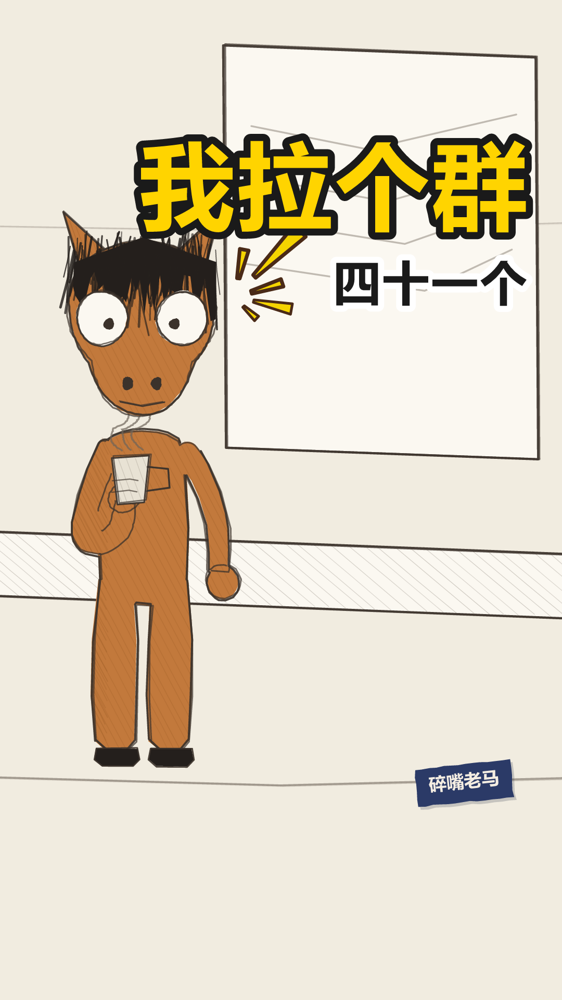

laoma-009
成片 · 场景图 · 对话内容 · 音色设置 · 分析思路
laoma-009
laoma-009.mp4 1.3s
1.3s我们开会有一句话，谁说了这句，这件事就算有人管了
 6.5s
6.5s原话六个字，这个我拉个群。说完就散会
 10.6s
10.6s群建得特别快，名字带日期，该在的人一个不少
 14.9s
14.9s第一条消息是，群拉好了，后续在这里同步
 19.5s
19.5s我手机里，有四十一个这样的群，一个都没退
 23.6s
23.6s每个群，都还停在第一条
封面 / 开场 / 定格 / 钩子



落地方案 · 分镜表 · 发布文案方案.md ↗
老马的第 1855 天 落地方案
带AUTO标记的区块由npm run preview从当前配置重新生成，改了会被覆盖。
其余部分随便改，重新生成时原样保留。
一、稿件定位
- 类型 A 类（对话反转，一句 punch 驱动全片）
- 一句话讲什么 一句话就能把一件事从「没人管」变成「有人管」，代价是手机里多一个群 —— 三十七个群，没有一个往下走过一步，包括他自己拉的那些。
- 为什么这么分镜 一镜到底，不切。 全片一个人在会议室说话，切镜会把它变成 PPT（SCRIPT_GUIDE §五：一条切换不超过 3 次，这条用 0）。场景选
meeting-room：工位栏目只有两个场景，007 刚用过 office-desk，隔两条再用太近（001 → 007 隔了六条），meeting-room 上一次是 005，隔四条。
⚠ 这条的场景不当道具，是有意的，跟 008 正好相反。 008 的叫号屏是落点指着的东西（「让场景替台词说话」，老马出片方案 §六之二）；这条落点指的是手机里的群，那东西摆不进画面 —— 硬摆一只手机就成了图解台词（§五：「画面出现了台词已经说过的东西，等于抢戏」）。白板只提供一个「他刚开完会」的底。选哪种做法，看落点指的东西能不能真的进画面。
- 不能动的地方
- x: 290 站位：跟 001–008 一模一样。系列里角色的站位要固定
- 例二（「群建得特别快，名字带日期，该在的人一个不少」）不能带贬义。 群确实建得又快又齐，这一句得先立得住，观众才会跟着以为这是执行力，例三和落点才打得下去 —— 跟 007 的「优化以后不用找人了」是同一处机关
- ⚠ 「一个不少」不能改回「一个不落」。 「落」在这儿读 là，Edge 默认读 luò，而 tone-check 查不了它 —— là 和 luò 同为四声，那个脚本比的是基频曲线，两个读音在它眼里一模一样。量不了的音就别用（正音层规矩：同音字替身）
- 例三那句群公告要照抄，不能改成人话。 「群拉好了，后续在这里同步」原样就是群公告体，改顺了反而假；而且落点唯一的凭据就是这句里那个没人接的「后续」（§一之三 误导必须公平）
- 物件是「群」（object，出现在第 2、3、4、5、6 五句）。§一之十二：删掉它整条稿子全塌。
全片没有一个字解释它：为什么一件事必须靠拉群才算有人管？没人说。物件不一定是实物 —— 一个动作也算
- 钩子 4 → 回收 6：第 4 句「第一条消息是，群拉好了，后续在这里同步」，第 6 句「都还停在第一条」——
同一个词，一个字都没换（§一之十四 要求字面复现）
- ⚠ 「四十一」不能改回「三十七」。 007 的转折句是「一共三十七块」，两条只隔两期 ——
同一个数出现两次是最明显的模板痕迹（§一之十六）。这是数字账本 horse/used-numbers.json 报出来的，
不是眼睛看出来的。改这个数要连封面副标题一起改：封面不在 lines 里，账本查不到它
- 转折句的「一个都没退」不能删。 没有它，落点就是在数落别人；有了它，三十七个群里他自己也一言未发（§一之十一：写他们是嘲笑，写我才是自嘲）
- 落点的「还」不能删。 「都停在第一条」是静态描述，「都还停在第一条」才有「到今天为止」的时间感
- 三条例子的 padAfter 必须等长（0.3）：§四 要「短且等长」，节拍立不住，转折前那半秒就没有对比
- 例三之后 closeEyes: 0.9：全片唯一一次闭目。⚠ padAfter: 1.05 是为它加长的，改小会让闭目咬进下一句（体检拦）
- 落点「每个群，」后面那 0.4 秒不能删。 观众在这 0.4 秒里知道要来一个统一的结论，但猜不到是哪一条
- 六个字 / 三十七 / 第一条，三个数一个都不能凑成整数：§一之四，奇数和具体数听起来像真数过
- 收尾卡挂灯，不是汗。 §五：想通了一件没用的事用「灯」，自带反讽 —— 他数完三十七个群，得出的结论对生活一点用都没有。汗＝当场被自己抓包（这条他是在盘账，不是被抓；而且前八条已经用了四次汗），问＝账没算清（007 用过，这条账是清的），冷＝僵住发凉（005 用过，这条的底色是发现不是受惊）。参数照抄 004 不换 seed
二、分镜表
| 时间 | 画面 | 台词 | 音效 / BGM |
|---|---|---|---|
| 0:00.0–0:01.2 | 开场空镜 场景 meeting-room | — | BGM 关 |
| 0:01.3–0:06.1 | 场景 meeting-room 在场 ma 单人镜 | ma：我们开会有一句话，谁说了这句，这件事就算有人管了 | — |
| 0:06.5–0:10.2 | 同上 | ma：原话六个字，这个我拉个群。说完就散会 | — |
| 0:10.6–0:14.5 | 同上 | ma：群建得特别快，名字带日期，该在的人一个不少 | — |
| 0:14.9–0:18.3 | 同上 | ma：第一条消息是，群拉好了，后续在这里同步 | — |
| 0:18.4–0:19.3 | 闭目 0.9s 不是眨眼 —— 忍耐 | — | 静音 |
| 0:19.5–0:22.9 | 同上 | ma：我手机里，有四十一个这样的群，一个都没退 | — |
| 0:23.6–0:26.4 | 同上 | ma：每个群，都还停在第一条 | — |
| 0:26.4–0:29.1 | 定格去色 + 钩子字幕「老马的第 1855 天」 | — | BGM 骤停 |
三、场景 / 角色 / 节奏
场景 meeting-room
节奏 banter
句内 0.18/0.12s 句间 0.35s 换镜 0.50s
| 角色 | 形象 | 音色 |
|---|---|---|
| ma | horse x=290 | 老马 |
片长 29.08s 6 句 1 个分镜
四、发布文案
发平台时直接抄这一段。
- 标题候选
1. 我们开会有一句话，说完这件事就算有人管了 ←主选
2. 我手机里有三十七个群
3. 原话六个字，这个我拉个群
- 为什么是第 1 个 它是钩子原句，先给效果不给那句话，悬念全留在片子里 —— 而观众里凡是坐过班的，读到这儿脑子里已经在猜是哪一句了，点进来是为了对答案。跟封面大字「我拉个群」唱双簧：大字把那句话抖出来，标题给它的效力，两边都不碰落点。第 2 个把三十七这个数抖在标题上，转折句就不新鲜了；第 3 个最像那句原话，但它是揭晓句，用掉之后片子里那一下就没了。
- 副标题
老马 · 工位 群建得特别快，名字带日期 - 内容关键词 拉群 / 开会 / 微信群 / 工作群 / 打工人
- 热度关键词 工作群 / 开会 / 微信群 / 职场黑话 / 打工人日常
- 话题标签 #工作群 #开会 #职场
- 简介
> 我们开会有一句话，谁说了这句，这件事就算有人管了。
>
> 原话六个字：这个我拉个群。说完就散会。
> 群建得特别快，名字带日期，该在的人一个不少。第一条消息是「群拉好了，后续在这里同步」。
- 封面大字
我拉个群（副标题四十一个，跟台词同步改过）
五、人工核对
- 每一镜的画面和台词对得上（看 index.html 的场景图）
- 音画同步：配音起点落在字幕窗口内
- 站位：
npm run layout零冲突 - 节奏：句间缓冲听着不赶
- 内容风控